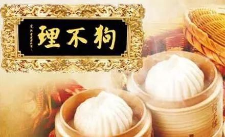

狗不理包子（Go Believe/Goubuli steamed bun） 是中国天津的一道闻名中外的传统小吃，该小吃以一道由面粉、猪肉等材料制作而成的小吃， 其始创于公元1858年（清朝咸丰年间），有100多年历史，该小吃为“天津三绝”之首， 是中华老字号之一。狗不理包子的面、馅选料精细，制作工艺严格，外形美观，特别是包子褶花匀称， 每个包子都不少于15个褶
豆腐脑的最大特点是豆腐的细嫩以及柔软， 故称豆腐中的脑，因此要掌握点卤的技巧。它要求熬浆用微火， 不能溢锅（可以放入豆制品专用消泡剂消除泡沫，食用油也可以）， 使豆腐脑不糊、不苦、不涩，勾卤时用急火，一开锅就行。 卤的烹制要用鲜羊肉片和好口磨汤，火候要掌握好，不能用炖肉的技法熬卤， 才能保持卤的新鲜
糖炒栗子是京津一带别具地方风味的著名传统小吃，也是具有悠久传统的美味。 南宋时，陆游在《老学庵笔记》中曾记述这样一段动人的故事。 他说：“故都（指北宋的汴京，即今开封）李和炒菜，名闻四方，他人百计效之， 终不可及。”接着写道：“绍兴中，陈福公及钱上阁，出使虏庭，至燕山， 忽有两人持炒栗各十裹来改……自赞曰：‘李和儿也。’挥涕而去。”据此可以推知， 汴京的炒菜专家李和在外族人侵时家破业敝，他的儿子带着炒栗的绝技流落燕山。 他用献给故国使者的栗子，表达自己对统一祖国的热望。